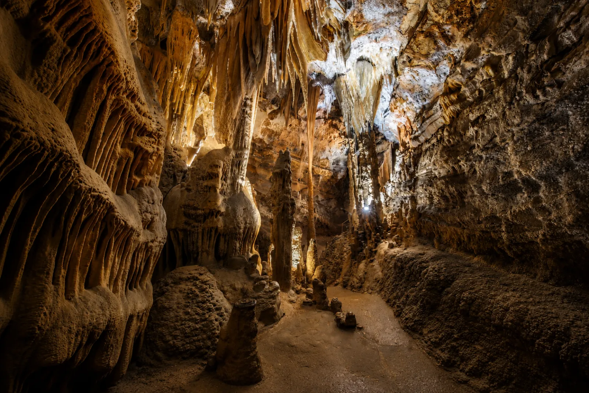

De Grotte de la Madeleine ligt verscholen in het hart van de Gorges de l'Ardèche, op ongeveer 42 minuten rijden van Les Cabritas, en werd in 1887 bij toeval ontdekt door een jonge herder, Germain Rigaud, die op zoek was naar een weggelopen geit. Ze werd in 1969 voor het publiek geopend, nadat een tunnel was gegraven die haar twee natuurlijke holtes verbindt, en heeft nu drie sterren in de Michelingids. De rondleiding, versterkt met een licht- en geluidsshow, voert door enorme zalen vol druipsteen met opvallende vormen en kleuren.

Een ontdekking als uit een avonturenroman
Het verhaal van de grot begint als een plaatselijke legende: terwijl hij alleen bij kaarslicht zijn geit zocht, stuitte de jonge Germain Rigaud, bijgenaamd 'le filleul', op een enorm ondergronds netwerk. Het methodische werk van speleologen als Robert de Joly in 1936, en daarna abbé André Glory en Jean Trébuchon in de jaren 1950, was nodig om bijna vier kilometer gangen in kaart te brengen. Na een eerste bescheiden opening in 1952 ontving de grot officieel publiek vanaf 10 augustus 1969.
Spectaculaire druipsteen en een adembenemend panorama
De rondleiding daalt 65 meter onder de grond af, door enorme zalen waar stalactieten, stalagmieten, draperieën en zuilen een mineraal decor vormen dat in duizenden jaren is gebeeldhouwd. Bij de uitgang leidt een ontdekkingspad naar de Belvédère de la Cathédrale, een duizelingwekkend uitkijkpunt over het Cirque de la Madeleine en de witte rotswanden van de kloven — een van de meest gefotografeerde panorama's van de streek.
Goed om te weten voor uw bezoek
Reken op ongeveer 42 minuten rijden vanaf Les Cabritas Sud-Ardèche naar de Grotte de la Madeleine, open van 1 april tot 1 november. In 2026 betaalt u ongeveer € 15 voor volwassenen, € 12 voor 13-17 jaar en € 10 voor kinderen van 6-12 jaar (gratis onder de 5). Audiogidsen zijn beschikbaar in zeven talen. Neem ondanks de zomerhitte een dunne trui mee: zoals in alle grotten van de streek blijft het ondergronds het hele jaar koel.
Praktische informatie vanuit Les Cabritas
- Afstand vanaf Saint-Alban-Auriolles: ongeveer 42 min rijden
- Beste periode: april tot oktober (openingsseizoen), 's ochtends om de drukte te vermijden
- Ideaal voor: gezinnen, geologieliefhebbers, liefhebbers van grotten en panorama's
Zin om de Grotte de la Madeleine, een ondergronds juweel in de Gorges de l'Ardèche, te ontdekken vanuit uw vakantiehuis in de Ardèche?
Les Cabritas Sud-Ardèche verwelkomt u in Saint-Alban-Auriolles, in het hart van de Zuid-Ardèche, voor een comfortabel verblijf met privézwembad, vlak bij de mooiste plekken van de streek.
Beschikbaarheid bekijken